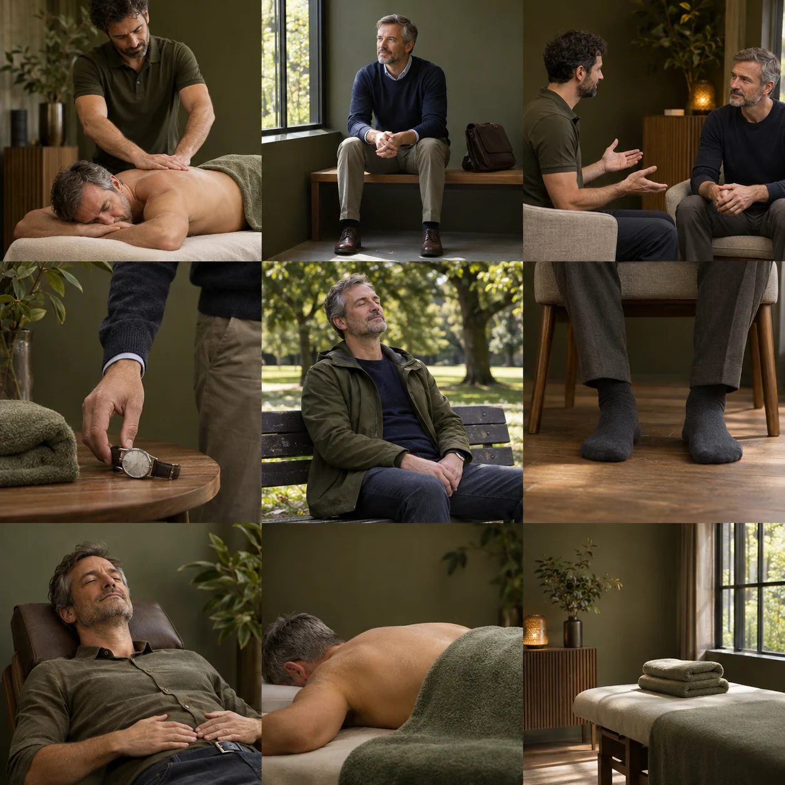

Warum der Feierabend manchmal später beginnt
Du bist aus dem Büro oder der Werkstatt raus, beantwortest aber gedanklich noch eine Nachricht. Beim Essen fällt dir ein, was morgen zuerst zu tun ist. Wer tagsüber oft schnell reagieren muss, nimmt diese Bereitschaft leicht mit nach Hause. Es hilft, den Übergang ernst zu nehmen und ihm ein paar Minuten zu geben.
Was eine Pause leichter macht
Für den Anfang genügt etwas Überschaubares. Geh einen kurzen Umweg nach Hause, leg das Handy weg, wenn du dich hinsetzt, oder trink deinen Kaffee, bevor du die nächste Aufgabe anfängst. Probier aus, was sich mit deinem Alltag verträgt. Vielleicht passt Bewegung besser zu dir als stilles Sitzen. An einem anderen Tag ist es genau umgekehrt.
Auf der Massageliege gibt es keine Aufgabe
Bei einer Massage kannst du beobachten, wie es dir gerade geht. Liegt der Kopf angenehm? Möchtest du etwas sagen oder lieber still bleiben? Wenn du das Tempo mitbestimmen kannst, fällt es leichter, bei dem zu bleiben, was du im Moment wahrnimmst. Du kannst einen Termin auch dann geniessen, wenn du zwischendurch an morgen denkst.